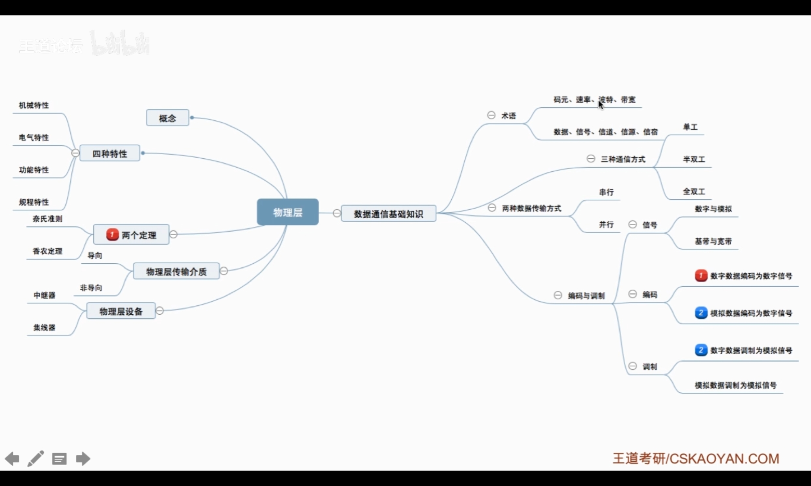
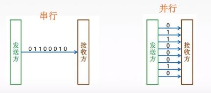
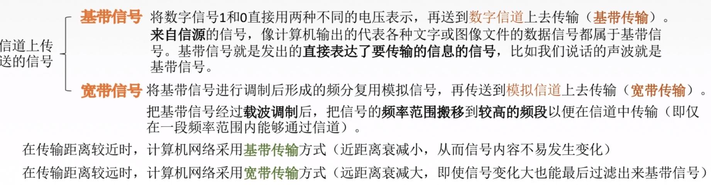
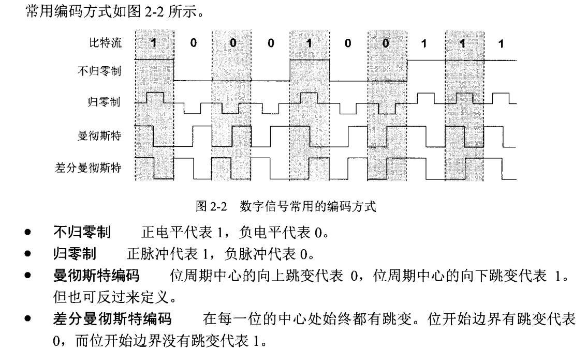
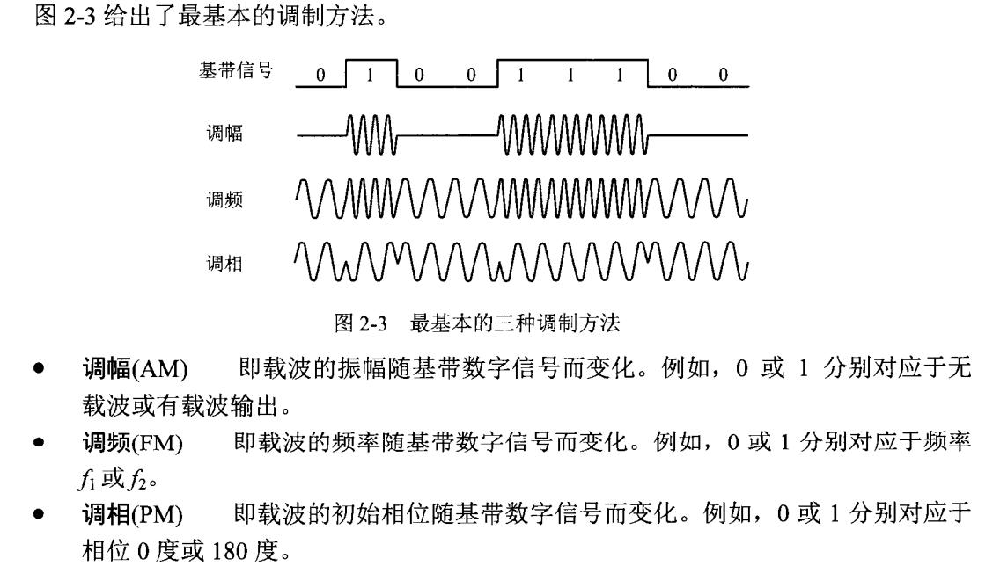
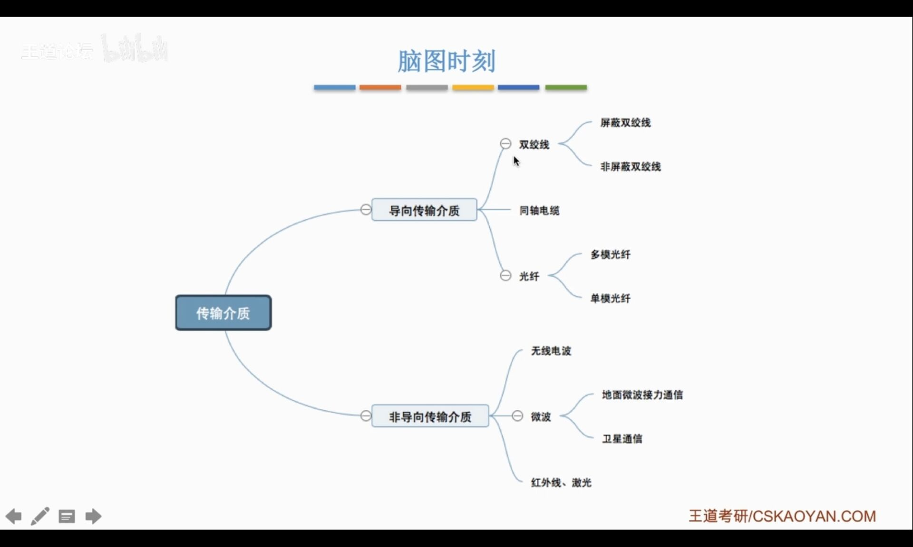

物理层
这一章对我来说不算重点，应付考试。看书更好。

物理层解决如何在传输媒体上传输数据比特流。 确定与传输媒体接口有关的一些特性：
- 械特性 - 指明接口所用接线器的形状和尺寸、引线数目和排列、固定和锁定装置等
- 电气特性 - 指明在接口电缆的各条线上出现的电压的范围
- 功能特性 - 规定物理接口上各条信号线的功能分配和确切定义（各条线上出现各种电压表示何意义）
- 规程特性 - 定义了各信号线的工作顺序和时序，使得比特流传输得以完成。
通信基础概念
信号的传输方式有串行传输和并行传输。
- 串行传输 速度慢，费用低，适合远距离，不容易出错。
- 并行传输 速度快，费用高，适合近距离，计算机内部多用。 
从通信信道的介质上看，分为无线信道和有线信道。从通信信道传输的信号形式上看，分为模拟信道和数字信道。
从通信双方的交互方式上看，有三种通信方式：
- 单工通信：只有一个方向的通信，只需要一条信道。
- 半双工通信：通信的双方都可以发送或接收信息，但是不能同时发送。需要两条信道。
- 全双工通信：通信的双方都可以发送或接收信息，允许同时发送。
- 码元：一个固定时长的信号波形。代表不同离散数值的基本波形，是数字通信中数字信号的基本传输单位。通常都是二进制码元，有0和1，也可以不是二进制，而是可能代表N种离散数值。
- 速率：指数据的传输速率，表示单位时间内传输的数据量。可以用码元传输速率和信息传输速率表示。
- 信息传输速率指的是1秒能传输多少bit（二进制码元），单位是b/s。
- 数字带宽：单位时间内某一点到另一点所能通过的 最高数据率，理想的速率。
- 模拟带宽：信道的频带宽度，单位是 Hz
编码与调制1
- 数据：传送信息的实体，通常是有意义的符号序列。
- 信号：数据的电气、电磁表现
- 数字信号：参数取值离散
- 模拟信号：参数取值连续
- 信源：产生和发送数据的源头
- 信宿：接收数据的终点。
- 信道channel：信号灯传输媒介。一般用来表示向某一个方向传送信息的介质。
- 根据传输介质分为 无线信道和有限信道
- 根据传输信号不同分为 模拟信道和数据信道
- 宽带和基带

- 把数据变成数字信号，称为编码。把数据变成模拟信号，称为调制。
两个公式-信道的极限容量 :star:
- 信道带宽：信道能够通过的最高频率和最低频率之差，单位是Hz。
- 码间串扰：接收端接收到的信号波形失去了码元间清晰界限的现象。所以频率越高越容易发生码间串扰。
- 奈氏准则：在理想低通（带宽受限，无噪声）条件下，为了避免码间串扰，极限码元传输速率为2W Baud，W是信道模拟带宽，单位是Hz。这个是通信原理的内容了，我只能记住了。。。
所以极限数据传输速率$=2Wlog_{2}V\ (b/s)$，V是码元的离散电平数目。所以，要想提高数据的传输速率，可以提高每个码元携带的信息量。
- S/N = 信号的平均功率S/噪声的平均功率N。不过我们一般使用信噪比(dB)$=10log_{10}(S/N)$ 来衡量噪声的大小。
- 香农定理：信道的极限数据传输速率$=Wlog_2(1+S/N)\ (b/s)$
所以，对于一定的传输带宽和一定的信噪比，信息传输速率上限就确定了。用奈氏准则和香农定理计算，取小的那个。
数字数据编码为数字信号:star:

经典以太网使用曼彻斯特编码。
除此之外，还有4b/5b编码，这样只需要增加25%的带宽。快速以太网，ATM使用。
数字数据调制为模拟信号:star:

模拟数据编码为数字信号
抽样-量化-编码。 抽样的频率应该比数据的频率大两倍以上才能得到可靠的信号。
模拟数据调制为模拟信号
数据交换
-
电路交换。在数据交换之前，两个节点必须先建立一条双方独占的物理通信路径（建立连接），之后的通信直接通过这个路径进行。
-
报文交换。数据交换的单位是报文，报文携带有目的地址，源地址等信息。报文交换在交换节点采用存储转发的方式。
-
分组交换。数据交换的单位是分组，和报文交换很像，不过限制了每次传送数据块的大小上限，也就是说太大的报文会被分成若干个小的分组。
分组交换根据其通信子网向端点系统提供的服务，还可进一步分为面向连接的虚电路方式和无连接的数据报方式。这两种服务方式都由网络层提供。要注意数据报方式和虚电路方式是分组交换的两种方式。
- 数据报：
传输介质
 传输介质不属于物理层。
- 导向性传输介质：
- 双绞线-价格便宜，局域网中常用。通信距离一般为几到数十公里。
- 同轴电缆：分为基带同轴电缆，常用于局域网；和宽带同轴电缆，常用于有线电视系统。抗干扰性更好，传输距离更远，价格更贵。
- 光纤：通过光脉冲来通信，带宽非常大。体积小重量轻。价格高。
- 非导向性传输介质：
- 无线电波：信号向所有方向传播。穿透能力强，可传远距离。带宽低。
- 微波：信号沿着固定方向传播。通信频率高，波段范围宽，所以数据率高。 卫星通信。
- 红外线和激光：信号沿着固定方向传播。
信道的复用 :star:
-
FMD：所有的用户在同样的时间占用不同带宽（这里的"带宽"是频率带宽而不是数据的发送速率）资源。
- 当多个信道被复用在一起时，比语音通信所需多出来的那部分频带称为保护带（ guard band ），它使信道之间完全隔离。
-
TDM：所有的用户在不同的事件占用同样的频带宽度。
- 2.048 Mbps 的 E1载波。E1载波有32个8比特数据样值被封装在125us的帧中，32个信道中的30 个用于传输信息，2个用作信令。每四个帧为一组。
- 1.544 Mbps 的 T1载波。Tl 载波包含 24 条被复用在一起的语音信道，每个信道依次将8比特(7个数据比特和1个信令)的样值插入到输出流中。每帧包含 24*8=192 个比特，再加上额外一个比特用于控制，因而每 125 微秒产生 193个比特。
-
CDMA： 码分复用 CDM（Code Division Multiplexing）是另一种共享信道的方法。实际上，人们更常用的名词是码分多址 CDMA（Code Division Multiple Access）。每一个用户可以在同样的时间使用同样的频带进行通信。由于各用户使用经过特殊挑选的不同码型，因此各用户之间不会造成干扰。码分复用最初用于军事通信，因为这种系统发送的信号有很强的抗干扰能力，其频谱类似于白噪声，不易被敌人发现。灵活，利用率高。
CDMA中每个比特时间被分成m个更短的时间间隔。每个站被分配得到唯一的m位码，称为码片序列。若要发送比特1，站就发送分配给它的码片序列；若要发送比特0，它就发送其码片序列的反码。
宽带接入技术
用户要连接到互联网，必须先连接到某个 ISP，以便获得上网所需的 IP 地址。
- 非对称数字用户线 ADSL（Asymmetric Digital Subscriber Line）技术是用数字技术对现有的模拟电话用户线进行改造，使它能够承载宽带数字业务。这里的非对称指的是上传速度小于下载速度。ADSL 最大的好处就是可以利用现有电话网中的用户线（铜线），而不需要重新布线。
- 光纤到户 FttH